02 · WebGPU
Array-first workload
Explore packed instance data and a browser WebGPU execution path. Compare input structure with the visible result.
Open array-first runner →
Visualize · Execution made observableVisualize is where presentation work becomes observable. Start with a running experiment, change its inputs, watch the output respond, and follow the path from data to representation. Play first. Understand the machinery as you go.
Each experiment exposes a different part of the presentation problem. Some execute WebGPU in the browser; others generate deterministic artifacts from the .NET contracts. Their evidence labels tell you which is which.
Explore packed instance data and a browser WebGPU execution path. Compare input structure with the visible result.
Open array-first runner →Run procedural geometry through browser WebGPU. Renderer/FSM policy selects the active horizon; Visualize spends the selected detail budget on up to 4,096 dust motes.
Open soldier-field runner →Change surface orientation and lighting inputs to explore how geometry and illumination interact.
Open lighting lab →Browser WebGPU means the visitor's browser submits work to the visitor's own GPU when supported; GitHub Pages only serves the files. .NET-generated SVG means the C# contracts and CPU backend generated a static artifact. Concept artwork explains an idea; it is not implementation evidence. We keep those claims separate. See exactly where FSM_API enters this repository →
Walk through the existing visual proofs, generated artifacts, and runnable recipes.
Explore the gallery →See where Experience state, FSM behavior, observer policy, and presentation execution belong.
Read the architecture →Follow the capability boundary: portable identity and composition belong to FSM_COS, not a NuGet capability dependency.
Explore the roadmap →